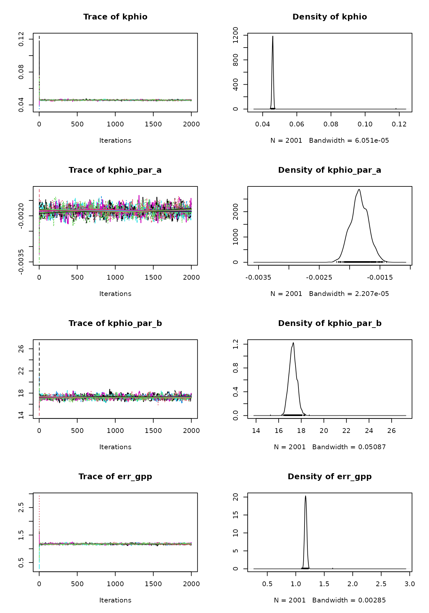
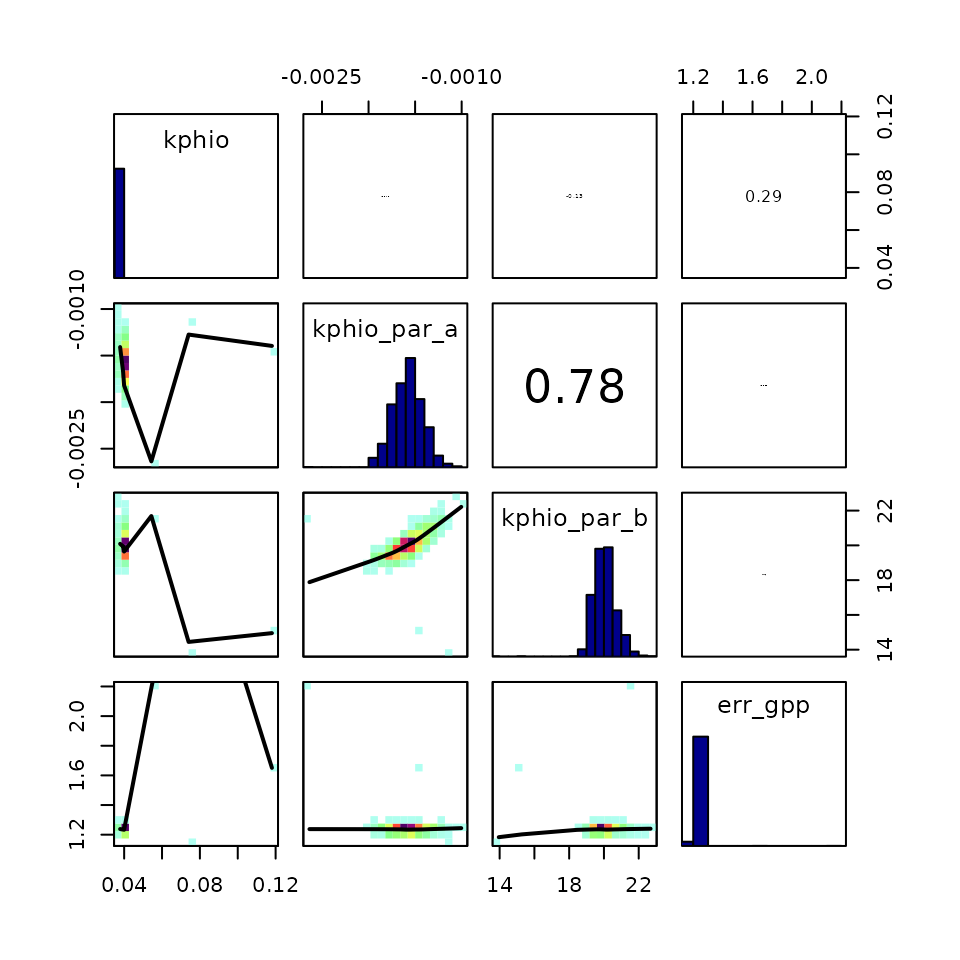

Sensitivity analysis
Pepa Aran
2023-04-18
Source:vignettes/sensitivity_analysis.Rmd
sensitivity_analysis.RmdParameter calibration can have a big impact on our modeling effort
and use big computational resources. Hence, it is worth our time to
explore which parameters should actually be calibrated (the ones that
impact the simulations greatly) and to examine if the calibration
routines behave as expected. This vignette explains how to perform a
simple parameter sensitivity analysis for the P-model and how to
interpret the outputs of the calibration using the
BayesianTools package.
Morris sensitivity analysis
The Morris method for global sensitivity analysis allows to explore which parameters have the biggest influence on the model fit. In this example, we will quantify how different values of the calibratable model parameters lead to more variability in the match between GPP predicted by the P-model and GPP observations. It would be wise to repeat this exercise for various targets because they may be simulated by equations in the P-model that involve different model parameters.
If the P-model has very low sensitivity to a certain parameter, calibrating it will not improve the model substantially. But if it’s very sensitive to another parameter, calibrating this second parameter could improve the P-model fit greatly. We should spend our computational resources on calibrating the parameters to which the model is most sensitive.
First of all, let’s define a function which measures the agreement between GPP predictions from the P-model and GPP observations, for a set of values of the calibratable parameters. It computes the normal log-likelihood of the GPP predictions, given the observed GPP and its uncertainty. We want to see how sensitive this function is to changes in the parameter values.
# Define log-likelihood function
ll_pmodel <- function(
par_v # a vector of all calibratable parameters including errors
){
rsofun::cost_likelihood_pmodel( # reuse likelihood cost function
par_v,
obs = rsofun::p_model_validation,
drivers = rsofun::p_model_drivers,
targets = "gpp"
)
}
# Compute log-likelihood for a given set of parameters
ll_pmodel( par_v = c(
kphio = 0.09423773, # setup ORG in Stocker et al. 2020 GMD
kphio_par_a = 0.0, # set to zero to disable temperature-dependence of kphio, setup ORG in Stocker et al. 2020 GMD
kphio_par_b = 1.0,
soilm_thetastar = 0.6 * 240, # to recover old setup with soil moisture stress
soilm_betao = 0.0,
beta_unitcostratio = 146.0,
rd_to_vcmax = 0.014, # value from Atkin et al. 2015 for C3 herbaceous
tau_acclim = 30.0,
kc_jmax = 0.41,
error_gpp = 0.9 # value from previous simulations
))
#> [1] -56672.71Some parameters are constrained by their physical interpretation
(e.g. kphio > 0) and it’s also necessary to provide a
bounded parameter space for Morris’ method to sample the parameter
space. We define the parameter space by their lower and upper
bounds.
# best parameter values (from previous literature)
par_cal_best <- c(
kphio = 0.09423773,
kphio_par_a = 0.1,
kphio_par_b = 25,
soilm_thetastar = 0.6*240,
soilm_betao = 0.2,
beta_unitcostratio = 146.0,
rd_to_vcmax = 0.014,
tau_acclim = 30.0,
kc_jmax = 0.41,
error_gpp = 1
)
# lower bound
par_cal_min <- c(
kphio = 0.0,
kphio_par_a = -0.2,
kphio_par_b = 10,
soilm_thetastar = 0,
soilm_betao = 0,
beta_unitcostratio = 50.0,
rd_to_vcmax = 0.01,
tau_acclim = 7.0,
kc_jmax = 0.2,
error_gpp = 0.01
)
# upper bound
par_cal_max <- c(
kphio = 5.0,
kphio_par_a = 0.5,
kphio_par_b = 40.0,
soilm_thetastar = 3000,
soilm_betao = 1,
beta_unitcostratio = 200.0,
rd_to_vcmax = 0.1,
tau_acclim = 60.0,
kc_jmax = 0.8,
error_gpp = 4
)We use the morris() function from the
{sensitivity} package to perform the sensitivity analysis.
As a target function, we will use the posterior density (log-likelihood)
of the parameters given the GPP data which we obtain via the function
BayesianTools::createBayesianSetup(). Note that, because of
using a uniform prior, the posterior distribution is proportional to the
GPP log-likelihood (defined previously) wherever the parameter values
are feasible and zero outside of the parameter ranges.
morris_setup <- BayesianTools::createBayesianSetup(
likelihood = ll_pmodel,
prior = BayesianTools::createUniformPrior(par_cal_min, par_cal_max, par_cal_best),
names = names(par_cal_best)
)In the following chunk, we run the Morris sensitivity analysis, using
a grid with r=500 values for each parameter and a
one-at-a-time design. Running the sensitivity analysis may take a few
minutes, even for this small example dataset, and is still
computationally cheaper than running the parameter calibration.
set.seed(432)
morrisOut <- sensitivity::morris(
model = morris_setup$posterior$density,
factors = names(par_cal_best),
r = 1000,
design = list(type = "oat", levels = 20, grid.jump = 3),
binf = par_cal_min,
bsup = par_cal_max,
scale = TRUE)The analysis evaluates the variability of the target function, i.e. the log-likelihood, for several points across the parameter space. Statistics \(\mu *\) and \(\sigma\) measure the average of the absolute differences between these log-likelihood values and their standard deviation, respectively. The higher the value of these statistics for a given parameter, the more influential the parameter is.
# summarise the morris output
morrisOut.df <- data.frame(
parameter = names(par_cal_best),
mu.star = apply(abs(morrisOut$ee), 2, mean, na.rm = T),
sigma = apply(morrisOut$ee, 2, sd, na.rm = T)
) %>%
arrange( mu.star )
morrisOut.df |>
tidyr::pivot_longer( -parameter, names_to = "variable", values_to = "value") |>
ggplot(aes(
reorder(parameter, value),
value,
fill = variable),
color = NA) +
geom_bar(position = position_dodge(), stat = 'identity') +
scale_fill_brewer("", labels = c('mu.star' = expression(mu * "*"),
'sigma' = expression(sigma))) +
theme_classic() +
theme(
axis.text = element_text(size = 6),
axis.title = element_blank(),
legend.position = c(0.05, 0.95), legend.justification = c(0.05, 0.95)
)
Interpretation of Bayesian calibration routine
It is always important to check the convergence of the MCMC algorithm used for the Bayesian calibration. Here we show some plots and statistics that may help you assess whether the parameter calibration has converged.
According to the previous sensitivity analysis, calibrating the error parameter for GPP and the Jmax cost ratio parameters will have the most impact on the model fit. Let’s run the calibration:
set.seed(2023)
# Define calibration settings
settings_calib <- list(
method = "BayesianTools",
metric = rsofun::cost_likelihood_pmodel,
control = list(
sampler = "DEzs",
settings = list(
burnin = 300,
iterations = 3000,
startValue = 3 # number of chains to be sampled
)),
par = list(
kc_jmax = list(lower = 0.2, upper = 0.8, init = 0.41),
err_gpp = list(lower = 0.1, upper = 3, init = 0.8)
)
)
# calibrate parameters kc_jmax and err_gpp
par_calib <- calib_sofun(
drivers = p_model_drivers,
obs = p_model_validation,
settings = settings_calib,
par_fixed = list(
kphio = 0.05,
kphio_par_a = -0.0001,
kphio_par_b = 33,
soilm_thetastar = 0.6*240,
soilm_betao = 0.2,
beta_unitcostratio = 146.0,
rd_to_vcmax = 0.014,
tau_acclim = 30.0),
targets = "gpp"
)BayesianTools makes it easy to produce the trace plot of
the MCMC chains and the posterior density plot for the parameters. Trace
plots show the time series of the sampled chains, which should reach a
stationary state. One can also choose a burnin visually, to discard the
early iterations and keep only the samples from the stationary
distribution to which they converge (we set above). The samples after
the burnin period are then used for inference.
# par(mar = c(2,2,2,2))
plot(par_calib$mod)
The posterior density plots may be lumpy. In this case it’s advisable to run the MCMC algorithm for more iterations, in order to get a better estimate of the parameters’ posterior distributions. A good posterior should look more gaussian (although it can be skewed). A multimodal density indicates that the MCMC is still exploring the parameter space and hasn’t converged yet.
When convergence has been reached, the oscillation of the time series should look like white noise. The presence of a trend indicates that convergence hasn’t been reached.
Trace plots can be deceiving and partial autocorrelation plots can throw some light. If autocorrelation is present, this can mean that the sampling is stuck in local maxima and the posterior parameter space may not be explored fully.
# Define function for plotting chains separately
plot_acf_mcmc <- function(chains, par_names){
# chains: from the BayesianTools output
n_chains <- length(chains)
par(mfrow = c(length(par_names), n_chains))
for(par_name in par_names){
for(i in 1:n_chains){
chains[[i]][, par_name] |>
pacf(main = paste0("Series of ", par_name, " , chain ", i))
}
}
}
plot_acf_mcmc(par_calib$mod$chain, c("err_gpp", "kc_jmax"))
Looking at the correlation between chains is also helpful because parameter correlation may slow down convergence, or the chains may oscillate in the multivariate posterior space. Here the correlation is very small and we saw above that the chains reached a stationary distribution quite quickly.
correlationPlot(par_calib$mod)
In addition to visualizations, it’s helpful to compute some convergence diagnostics, like the Gelman-Brooks-Rubin (GBR) “potential scale factor” (psf). This diagnostic compares the variance within chains to that across chains and should progressively get closer to 1. It is common in the literature to accept a GBR between 1.05 and 1.1, indicating convergence.
We use the summary function from the
BayesianTools library, which shows the psf next to other
parameter estimations. Finally, the parameter MAP estimates can be
derived from the chains (that converged) after removing the burnin
period.
summary(par_calib$mod)
#> Warning: Returning more (or less) than 1 row per `summarise()` group was deprecated in
#> dplyr 1.1.0.
#> ℹ Please use `reframe()` instead.
#> ℹ When switching from `summarise()` to `reframe()`, remember that `reframe()`
#> always returns an ungrouped data frame and adjust accordingly.
#> ℹ The deprecated feature was likely used in the rsofun package.
#> Please report the issue at <https://github.com/geco-bern/rsofun/issues>.
#> This warning is displayed once every 8 hours.
#> Call `lifecycle::last_lifecycle_warnings()` to see where this warning was
#> generated.
#> # # # # # # # # # # # # # # # # # # # # # # # # #
#> ## MCMC chain summary ##
#> # # # # # # # # # # # # # # # # # # # # # # # # #
#>
#> # MCMC sampler: DEzs
#> # Nr. Chains: 3
#> # Iterations per chain: 901
#> # Rejection rate: 0.791
#> # Effective sample size: 275
#> # Runtime: 114.502 sec.
#>
#> # Parameters
#> psf MAP 2.5% median 97.5%
#> kc_jmax 1.003 0.388 0.367 0.388 0.407
#> err_gpp 1.003 2.176 2.113 2.172 2.236
#>
#> ## DIC: 10969.53
#> ## Convergence
#> Gelman Rubin multivariate psrf:
#>
#> ## Correlations
#> kc_jmax err_gpp
#> kc_jmax 1.000 -0.031
#> err_gpp -0.031 1.000More details on diagnosing MCMC convergence can be found in this vignette from BayesianTools and this blogpost.